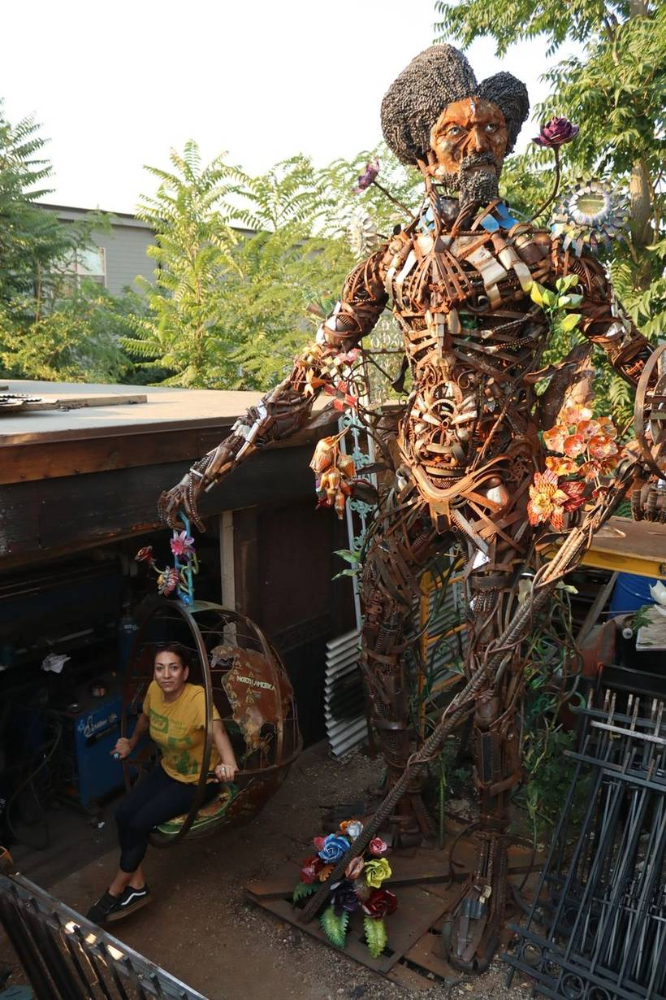

Architectural
Security doors, handrails, fences, custom signs, and embellishments that make a building pop.

2630 Arapahoe Street · Five Points
Sam McNeil’s shop welds security doors, handrails, fences, and public pieces — from recycled steel and things that would otherwise hit the scrap yard.
The shop
Sam McNeil, owner of Superior Iron Works, is a certified welder who has provided honest, professional service to the Denver community and throughout Colorado for many years.
He started welding in high school and has taught at Emily Griffith Opportunity School since 1979. He welded billboards at a sign company, used his parents’ garage as a shop, then opened his own place designing and repairing security doors.
The work he wanted to make is still the work: custom handmade designs and outdoor furniture from recycled material — things found in alleys and at garage sales, headed otherwise to scrap yards and landfills.
What we weld
The shop got its start on security doors, handrails, and fences. The same bay still designs, fabricates, and installs.
Security doors, handrails, fences, custom signs, and embellishments that make a building pop.
Commissioned sculptures and unique projects, fabricated onsite from recycled materials.
Completed work around the city and county of Denver and beyond. Collaboration welcome.
On the street
Boulder Library.
Blair Caldwell Library.
Santa Fe Arts District. Funded by Denver Arts & Venues’ P.S. You Are Here, with the district’s Moved by Metal initiative.
The crew
Their current page captions the team photo: Sam McNeil, Emily Przekwas, Minerva Spencer, and Sam Morrell.
Sam has been featured in the Rocky Mountain News, the Boulder Daily Camera, and other publications for the University of Colorado at Boulder Campus Bridge, and in Denver Urban Spectrum, September 2021.
“It is easier to build strong children than to repair broken men”Frederick Douglass — as printed on their page
Visit
Free to visit — by appointment. Please email superiorironworksdenver@gmail.com.
Superior Iron Works
2630 Arapahoe Street
Denver, Colorado 80205